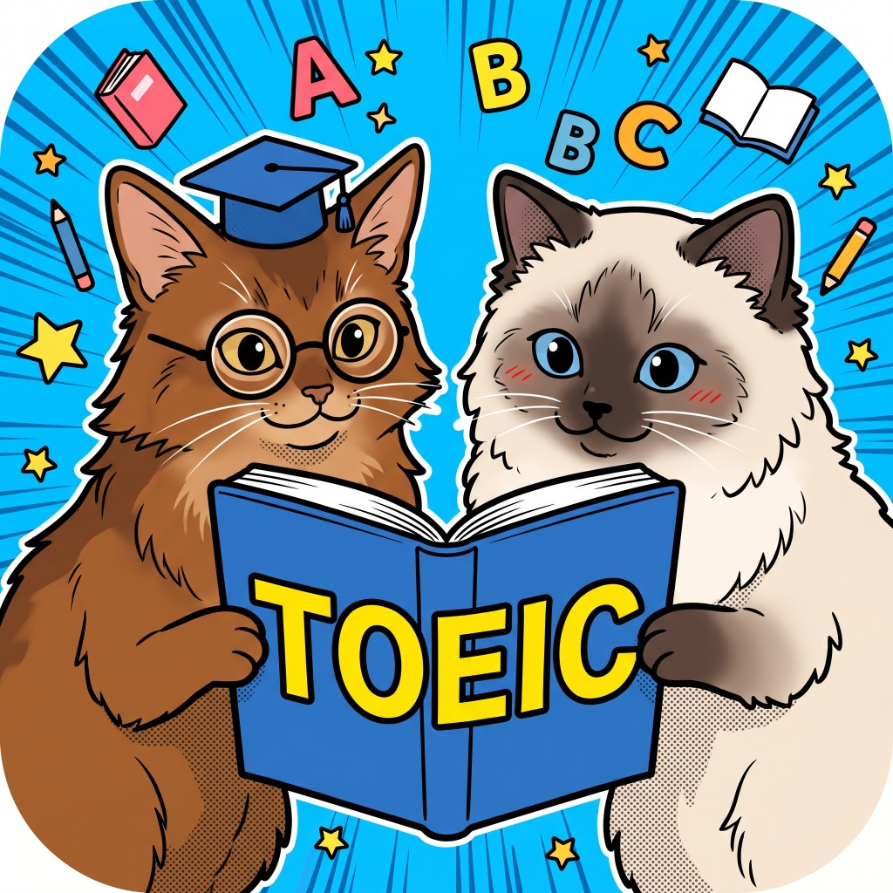

TOEIC AI Mentor
Part 2 & Part 5 実戦特化 AIラーニング
🎧 リスニング (Part 2)
📖 リーディング (Part 5)
難易度:
🎲 おまかせ
★☆☆☆☆ 500点 (基礎)
★★☆☆☆ 600点 (標準)
★★★☆☆ 700点 (中級)
★★★★☆ 800点 (上級)
★★★★★ 900点+ (難関)
📜 履歴 (
0/0
)
⚙️
🔑
📜 学習演習履歴
(各最大100問保持)
✕
🎧 リスニング (
0/100
)
📖 リーディング (
0/100
)
解答数:
0
問 | 正答率:
0%
🗑️ 履歴をリセット
⚙️ 音声設定
閉じる ✕
話者の組み合わせ（質問 / 選択肢）:
👫 質問: 女性 / 選択肢: 男性（推奨）
👬 質問: 男性 / 選択肢: 女性
🎲 出題ごとに入れ替え
音声合成エンジン:
💻 ブラウザ標準音声（回数無制限・推奨）
🤖 Gemini AI Studio音声（スタジオ品質・1日10回制限あり）
🎧
リスニング演習 (Part 2)
「開始」ボタンを押すと、Geminiが新しい問題とネイティブ音声を生成します。
▶ 問題を開始する
Geminiが問題を作成中...
速度:
0.8x
0.9x
1.0x
1.1x
1.2x
▶ すべて通して聴く
質問のみ
選択肢のみ
Part 5 短文穴埋め
⏱️ 0s (目標: 20s以内)
(A)
(B)
(C)
(D)
次の問題を生成 ➔
💬
AI講師（キャット先生）に質問する
開く ▼
💡 なぜこの答え？
📝 重要単語まとめ
🔄 類似の例文
メンター先生（講師）
🐾 こんにちは！TOEIC AI Mentorの専任講師です。問題の解法や単語のニュアンス、選択肢の引っ掛け理由など、分からないことがあれば何でも気軽に聞いてくださいね！
送信